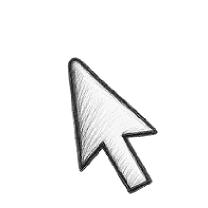

Slowly. like a drawing. Lasting. like an experience.
JANG YE WON / WEB DESIGNER

About Designer
당신의 이야기가
오래 머물 수 있도록 디자인합니다.
-
Detail
천천히 관찰하고, 오래 남는 디자인을 만듭니다.
작은 디테일까지 세심하게 살피며, 사용자에게 따뜻한 경험을 전달합니다. -
Balance
기본에 충실한 디자인이 가장 오래 기억된다고 믿습니다.
균형과 여백, 타이포그래피를 바탕으로 변하지 않는 디자인의 가치를 담아냅니다. -
Usability
좋은 디자인은 보기 좋은 것에서 끝나지 않습니다.
쉽게 이해되고 편리하게 사용될 때, 비로소 진정한 가치가 생깁니다. -
Connection
디자인은 사람과 사람을 연결하는 언어라고 생각합니다.
브랜드의 이야기를 자연스럽게 정리하고, 진심이 느껴지는 모습으로 표현합니다. -
Process
작은 아이디어도 정성스럽게 다듬으면 특별해집니다.
관찰하고 고민하는 과정을 반복하며, 목적에 맞는 디자인으로 완성합니다.